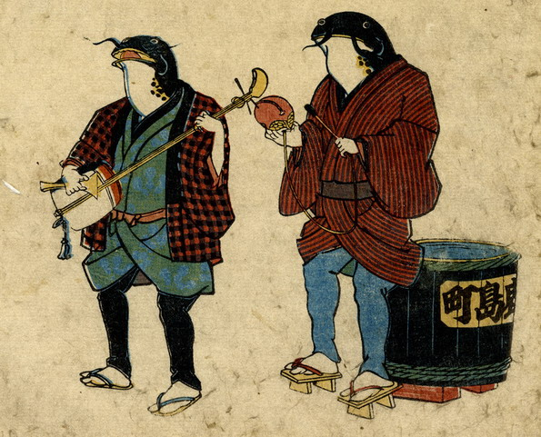

2体の鯰がすちゃらか節を演奏している。向かって左の鯰は三味線を奏でて、歌をうたっている。右の鯰は木魚を打っている。その脇には「鹿島町」と町名の入った防火用水桶が置かれている。
出典：親書誌：U426_nichibunken_0159：地震の寿ちゃらか；ジシンノスチャラカ／日付：2010／資源識別子：U426_nichibunken_0159_0001_0000
Copyright (c)2010- International Research Center for Japanese Studies, Kyoto, Japan. All rights reserved.